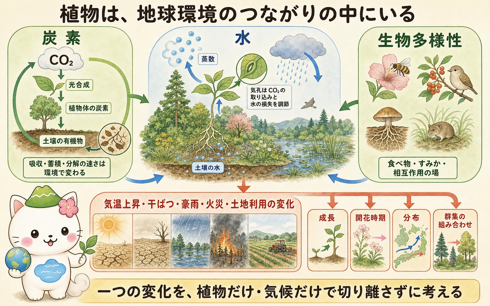
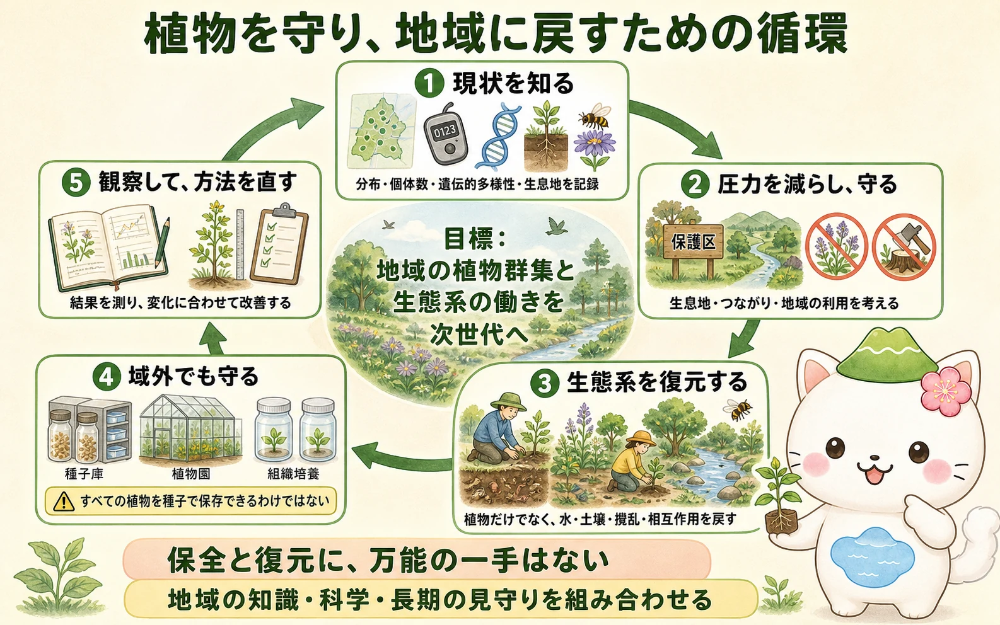

植物と炭素・水・生物多様性
植物は光合成で大気中のCO2を有機物へ変え、その炭素は植物体、根から出る物質、落ち葉、土壌有機物へ移ります。同時に呼吸や分解で炭素は再び環境へ戻ります。植物を「炭素をためる箱」とだけ考えず、吸収・蓄積・分解が同時に進む循環として見ることが重要です。
根が土壌から吸い上げた水は、葉からの蒸散によって大気へ出ます。気孔はCO2の取り込みと水の損失の折り合いをつけるため、乾燥や高温では光合成・生長・水利用の関係が変わります。植物群集は、花粉を運ぶ動物、種子を散布する動物、菌根菌などに食べ物やすみか、相互作用の場も提供します。


木を植えれば必ず同じだけ炭素をためられる、とは言えないよ。樹種、土壌、水分、気温、火災や伐採、分解の速さまで見て、場所ごとの循環を考える必要があるんだ。
気候変動と植物群集の変化
気温、降水の季節性、干ばつ、極端な高温、火災の起こりやすさが変わると、植物は生長、開花・結実の時期、種子の発芽、病害虫への応答、分布を変えることがあります。すでに、多くの地域で生物の季節現象や分布の変化が観察されています。移動できない植物では、世代交代や種子散布を通じて分布が変わるため、変化に追いつけない集団もあります。
影響は気候だけで決まりません。生息地の分断、土地利用の変化、汚染、外来生物、過剰な利用などが重なると、群集の回復力は下がります。反対に、残された自然度の高い場所を守り、地域どうしをつなぎ、ほかの圧力を減らすことは、植物とそれに関わる生物が変化へ対応する余地を広げます。
植物を守る二つの場所
域内保全は、植物が本来生きる場所で、生息地と生きた個体群を守る方法です。そこで続く受粉、種子散布、世代交代、環境への適応まで含めて守れることが強みです。一方で、絶滅の危険が高い場合や生息地の回復に時間がかかる場合には、植物園、種子庫、組織培養などを使う域外保全が重要な備えになります。
種子庫は多くの植物に有効ですが、乾燥や低温に耐えにくい種子をもつ植物、種子をつくりにくい植物などには、そのまま使えません。生きたコレクション、組織培養、凍結保存などを組み合わせる必要があります。域外保全は野生の生息地の代わりではなく、域内保全を支える補完手段です。
復元は続けて直す仕事
生態系復元は、苗を植えるだけではありません。どの地域の、どの時点の、どんな生態系の働きを回復したいのかを定め、土壌、水の流れ、攪乱のあり方、在来植物、送粉者や土壌生物との関係を見ます。地域外から大量に持ち込めばよいわけでもなく、遺伝的な多様性と地域の条件を両方考える必要があります。

復元の成果は、植えた本数だけでは測れません。定着率、再生、在来種の割合、土壌や水の状態、送粉や種子散布、地域の利用との両立などを、時間をかけて確かめます。目標が達成できなければ、原因を調べて方法を直す順応的管理が必要です。
復元の「正解」は、地域によって違うよ。昔の景色の再現だけを目指すのではなく、これからの気候の中でも植物群集と生態系の働きが続くかを、地域の人と長く見守るんだ。
この連載の要点
- 植物は炭素・水の循環と、生物多様性を支える相互作用の中にあります。
- 気候変動と土地利用などの圧力は、植物の生長、季節現象、分布、群集の組み合わせを変えます。
- 域内保全は生息地と進化・相互作用の過程を守り、域外保全はそれを補う重要な備えです。
- 生態系復元は植栽だけではなく、現状把握、圧力の低減、地域条件への対応、長期の観察と改善を必要とします。